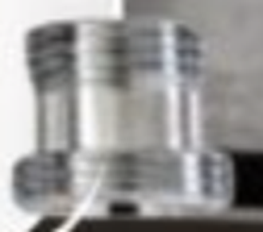
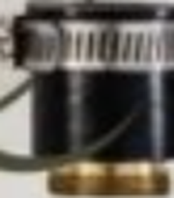

elvo
MANUAL DE INSTRUCCIONES
Purificador de caño
elvo·
Modelos elvo· Nativo y elvo· Vivo

Lee este manual antes de instalar y usar el producto, y consérvalo para consultas futuras.
elvo.peWhatsApp 929 190 100
Modelos elvo· Nativo y elvo· Vivo
Lee este manual antes de instalar y usar el producto, y consérvalo para consultas futuras.
| 1. Información importante | 2 |
| 2. Contenido del paquete y componentes | 3 |
| 3. Especificaciones técnicas | 3 |
| 4. Precauciones: qué hacer y qué no hacer | 4 |
| 5. Instalación | 5 |
| 6. Uso y cambio del núcleo | 7 |
| 7. Mantenimiento | 8 |
| 8. Solución de problemas | 8 |
| 9. Garantía y soporte | 9 |
| Hacer: acción recomendada. | |
| No hacer: acción que se debe evitar. | |
| DATO | Dato pendiente de confirmar (se retirará en la versión final). |
El purificador de caño elvo· se conecta al grifo de la cocina mediante un derivador y se coloca sobre la mesada. No requiere electricidad, obras ni gasfitero. Se instala en unos 5 minutos. El núcleo dura 18 meses de uso normal y te avisamos por WhatsApp cuando toque cambiarlo.
Pensado para agua de red potable. Los resultados dependen de la calidad del agua de entrada y del cambio oportuno del núcleo.
| Pieza | Cant. |
|---|---|
| Purificador con núcleo instalado | 1 |
| Derivador con manguera conectada y jebe puesto | 1 |
| Adaptador de doble rosca C | 1 |
| Llave para cambiar el núcleo | 1 |
Núcleos adicionales según tu plan. No incluido: un destornillador, necesario para ajustar el jebe.
| N.º | Componente | Descripción |
|---|---|---|
| 1 | Grifo (no incluido) | |
| 2 | Derivador (by pass) | con jebe puesto, o sin jebe según tu grifo |
| 3 | Palanca del derivador | horizontal: agua purificada; vertical: agua del caño |
| 4 | Manguera | ya viene conectada entre el derivador y el purificador |
| 5 | Purificador | se coloca sobre la mesada |
| 6 | Caño del purificador | por donde sale el agua purificada |
| 7 | Núcleo | dentro del purificador; viene con film que se debe retirar |
| Característica | Valor |
|---|---|
| Tipo de producto | Purificador de caño para mesada |
| Modelos | elvo· Nativo, elvo· Vivo |
| Alimentación eléctrica | No requiere |
| Agua de entrada | Agua de red potable |
| Medidas del purificador | 25 cm de alto x 6 cm de ancho |
| Tiempo de instalación | 5 minutos aproximadamente |
| Purga inicial | 10 minutos de agua corriendo |
| Duración del núcleo | 18 meses de uso normal |
| Conexión al grifo | Derivador con jebe ajustable, o adaptador de doble rosca C |
| Temperatura del agua | Mínima 2 °C, máxima 35 °C |
| Presión de uso | 0,5 a 3 bar (máxima soportada: 6 bar) |
| Caudal promedio | 1 L/min |
Tiempo aproximado: 5 minutos. No requiere electricidad ni gasfitero. Herramienta necesaria: un destornillador (no incluido), solo si usas el jebe.
Desenrosca el purificador con la llave que viene en la caja.

Saca el film del núcleo.
Enrosca el purificador de nuevo.
Revisa si tu grifo tiene aireador y elige una de estas opciones.
Probablemente se conecta directo. Retira el aireador girándolo con la mano y quítale el jebe al derivador.

Usa el adaptador de doble rosca C. El lado más grande va hacia el derivador, sin jebe.

Usa el jebe del derivador. Se ajusta o afloja con un destornillador (no incluido) para adaptarlo al caño.
Enrosca el derivador en la boca del grifo, directo o con la doble rosca C. Si usas el jebe, ajústalo al caño con el destornillador.

La manguera ya viene conectada entre el derivador y el purificador. Déjalo sobre la mesada, junto al grifo.
La primera vez que gires la palanca requiere un poco de fuerza.
Una vez instalado, con la palanca en horizontal, deja correr el agua por el purificador durante 10 minutos. Es la purga que activa el núcleo. Después ya puedes usarlo.
| Palanca del derivador | Resultado |
|---|---|
| Horizontal | Agua purificada: el agua pasa por el purificador y sale por su caño. |
| Vertical | Agua del caño, sin purificar. |
El núcleo dura 18 meses de uso normal. Te avisamos por WhatsApp cuando toque cambiarlo. Necesitas el núcleo de repuesto y la llave que viene en la caja.
Desenrosca el purificador con la llave de la caja.
Retira el film del núcleo de repuesto.
Sin importar el lado: funciona de ambos lados.
Vuelve a enroscar el purificador.
Antes de usar, deja correr el agua 10 minutos: es la purga y activación de los filtros.
| Cuándo | Qué hacer |
|---|---|
| Al instalar | Retirar el film del núcleo y hacer la purga de 10 minutos. |
| Uso diario | Palanca en horizontal para agua purificada. |
| Cada 18 meses | Cambiar el núcleo (te avisamos por WhatsApp). Hacer la purga de 10 minutos después del cambio. |
| Limpieza exterior | Se puede lavar o limpiar con un paño húmedo. |
| Si no se usa por varios días | POR CONFIRMAR |
| Problema | Posible causa | Qué hacer |
|---|---|---|
| No sale agua purificada | La palanca está en vertical. | Gira la palanca a horizontal. |
| La palanca cuesta moverse | Es normal la primera vez. | Gírala con un poco de fuerza. |
| El agua sale con sabor u olor al empezar | Falta la purga o el film sigue puesto. | Verifica que retiraste el film y deja correr el agua 10 minutos. |
| El derivador no encaja en mi grifo | El tipo de boca del grifo es distinto. | Revisa las tres opciones de la sección 5.2. Si no encaja, te devolvemos tu dinero. |
| Hay una fuga en la conexión del grifo | POR CONFIRMAR | POR CONFIRMAR |
| Sale poca agua por el purificador | POR CONFIRMAR | POR CONFIRMAR |
| Recibí el aviso de WhatsApp | Se cumplieron los 18 meses de uso normal. | Cambia el núcleo (sección 6.2). |
| Cobertura | Detalle |
|---|---|
| Garantía | 1 año. |
| Prueba | 30 días. Si no encaja en tu caño, te devolvemos tu dinero. |
| Condiciones de la garantía | POR CONFIRMAR |
Pensado para agua de red potable. Los resultados dependen de la calidad del agua de entrada y del cambio oportuno del núcleo.
elvo.pe